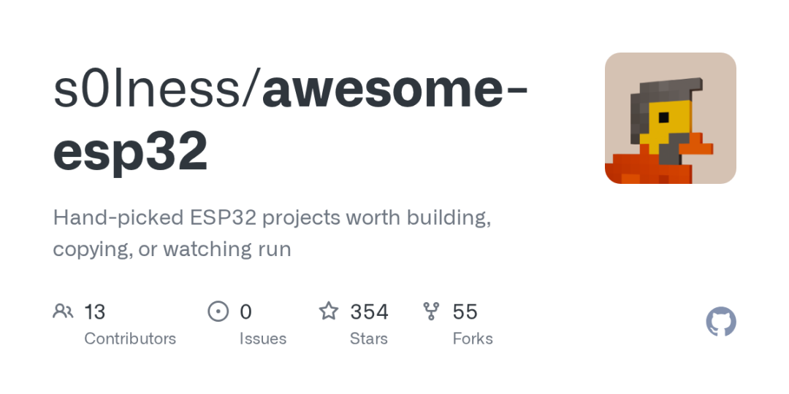

▲ awesome-esp32：精选 ESP32 项目合集，从入门到进阶全覆盖。
01 ESP32 最近很火
这个只有邮票大小的芯片，集成了 Wi-Fi、蓝牙、双核处理器，价格不到 10 块钱人民币。它能让你的项目连上网、能说话、能思考——而且便宜到丢了也不心疼。
但 ESP32 的生态太大了。板子型号繁多（ESP32、ESP32-S3、ESP32-C3、ESP32-P4…），开发框架混乱（Arduino、MicroPython、ESP-IDF、Rust…），项目教程散落各处。
s0lness 做了这件事：把 354 个值得玩的 ESP32 项目，全部整理到一个清单里。
02 它是什么
这是一个 awesome list——精心挑选的项目合集。
每个项目都标注了运行平台：用 Waveshare 的板子？用 M5Stack？还是裸片加外设自己搭？
清单按用途分类：
| Companions | |
| Displays & Ambient | |
| Play | |
| Robots | |
| Home & Control | |
| Radio & Comms | |
| Audio & Music | |
| Utilities |
03 几个值得关注的项目
chat-stick —— 按住说话的 Gemini 语音助手
M5StickS3 或 Waveshare AMOLED 屏上跑的语音界面，按住按键就和 Gemini Live 对话。支持持久计时器、服务端工具调用和 OTA 更新。
xiaozhi-esp32 —— 桌面 AI 聊天机器人固件
基于 MCP 协议的 AI 聊天机器人固件，支持几十种 ESP32 开发板，让桌面小装置"开口说话"。
pixelcat —— 电子宠物猫
Tamagotchi 风格的像素猫，养在 Waveshare AMOLED 屏上。它会学习你的作息、对触摸和声音做出反应，而且永远不会真正死亡。
infinite-golf —— procedurally 生成的迷你高尔夫
physically swing 设备，IMU 测量挥杆力度和方向，程序化生成无限关卡。
esp32-gameos —— ESP32 上的游戏 OS
六个完整的游戏，60fps 运行，零引擎、零资源文件——全部代码生成。
Meshtastic —— 离线 mesh 通信
不依赖蜂窝网络，用 LoRa 搭建加密 mesh 网络，户外探险、灾难应急都能用。
ESP-KVM —— 远程桌面 KVM over IP
Waveshare ESP32-P4-ETH + HDMI 桥接芯片，把任意电脑的屏幕投到浏览器，远程操作到 BIOS 层级。
04 从哪开始
如果你是新手，项目自带三篇入门指南：
1. 一个晚上从零学会 ESP32 —— 装工具链、点 LED、加按钮、跑 WiFi 网页 2. 给 ESP32 装上眼睛 —— 摄像头板、设备端视觉推理、检测→动作的完整流程 3. 8 美元的本地 AI 网关 —— 把小模型拆分到多个 ESP32-S3 节点，I2S 麦克风采集，BLE 执行
项目还提供了完整的开发实践指南，从选框架、管内存、看门狗到 OTA 升级，全是从实际项目中提炼的经验。
05 工具链与库
清单不只列应用项目，还整理了开发工具：
| 框架 | |
| 刷写工具 | |
| 模拟器 | |
| AI SDK |
特别值得一提的是 Wokwi——不用买硬件，浏览器里就能仿真 ESP32 板子和外设，是低成本入门的最佳入口。
06 怎么贡献
这是一个协作项目。如果你做出了有意思的 ESP32 项目，可以申请加入清单：
git clone https://github.com/s0lness/awesome-esp32.git
# 按格式添加项目描述
# 提交 PR项目维护者建议：每个条目末尾用反引号标注运行设备，方便读者按自己的硬件搜索相关项目。
写在最后
ESP32 的魔力在于：一个芯片，无限可能。
项目里，有适合新手的 Blink 进阶教程，也有硬核的 LoRa mesh 通信、边缘 AI 推理。
无论你是想做个桌面宠物、离线对讲机，还是智能家居控制面板，这份清单里都有现成参考。
收藏起来，下次不知道做什么的时候，翻一翻，总有一个项目能激发灵感。
https://github.com/s0lness/awesome-esp32